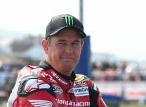

< < < Back
How Motorcycle Racing Helps Us Rediscover Masculine Risk-Taking – Return Of Kings
What could be crazier than a white-knuckle race through city streets, countryside, and around blind curves on a motorcycle? The Isle of Man TT is just that, widely considered the most prestigious race in all of motorcycle racing and the ultimate test of man and machine. The TT has run since 1907 on the tiny Isle of Man between Ireland and Scotland.
The highlight is the Superbike TT which contains motorcycles of 1000c to 1200c and regularly reaches speeds of over 200 miles per hour. There are other classes of racing, but the Superbike TT is without a doubt the biggest adrenaline rush.
The race showcases risk-taking, death-defying male behavior rarely seen in the increasingly gelded Western world. It is literally death-defying, it is balls out, it is certifiably insane. That is arguably what makes it great.
The legacy media roundly criticizes the event, as there have been over 140 deaths of competitors at practices or races since its inception—an average of slightly more than one death annually! In 2005 alone 11 men died. If the entire series is included, adding the Manx Grand Prix and Clubman series of the 1940s and 1950s the total number of deaths jumps to almost 250. But the races continue.
Death is waiting around every turn at the TT
The Course
The Snaefell Mountain Course is where the action takes place. It is a 37.73 mile course around the Isle of Man that starts in Douglas. At the incredible speeds of 150 to 200 miles per hour, it takes less than 20 minutes to run the entire course.
The 37.73 mile Isle of Man TT course starts in Douglas
The course runs through narrow city streets, bumpy back roads, curvy mountain roads, and rolling countryside. Some say it makes Nürburgring look like an amateur course by comparison. This video shows what it is like to run a lap around the Isle of Man TT at speeds topping 200 mph, seen from Guy Martin’s point of view as he races one of the event’s biggest names, Michael Dunlop. The skill of these riders is simply amazing.
TT Titans
The Lap Record was set by John McGuinness during the 2015 season. McGuinness blazed through the course at an average speed of 132.701 miles per hour in 17 minutes and 3.567 seconds.
McGuinness had this to say after his record-setting run in 2015.
It’s something I’m really proud of, winning against all those youngsters. The bar is going up and up and I’ve got to go up with them. I’m 43 now, and I’m not in the greatest shape in the world, but mentally I’m strong. When you reach my age, you look crap but I feel great, and I still know how to do it. I just needed to find that little bit of heart and
determination, and belief.

43-year old John McGuinness, Isle of Man TT lap record holder
The Race Record is held by Michael Dunlop, who completed the 6 laps of the TT in 1 hour, 45 minutes and 29.980 seconds at an average speed of 128.747 miles per hour during the 2013 season. Together with McGuinness, Dunlop is one of the biggest names in the sport.
27-year old Michael Dunlop, Isle of Man TT race record holder
Dunlop’s brother, Robert died in the 2008 Isle of Man TT after a crash. Dunlop responds to some of the criticism he regularly receives for racing each year.
People say it’s a dangerous sport and that you are mad in the head and if I’m honest, yeah, I have a little touch in the head and I’m probably not the full square.
But at the end of the day, I’m not battering women or taking drugs.
Male Risk Taking Behavior
Aside from the glory and love of sport, what could possibly motivate men to take such risks? We need look no further than the demands of natural selection. It is ingrained into male DNA to take risks. The University of California at San Diego did research into male risk-taking and came up with these scientific conclusions:
For physiological reasons, the investment required to produce an offspring is generally much greater for a female than for a male (in humans 9 months of gestation time vs. a few minutes). Thus, a male potentially can greatly increase his Darwinian fitness by having sex with multiple partners, whereas a female cannot. One potential consequence of this is much greater variability in male reproductive success than female. This difference may make it adaptive for males to be willing to take great risks for a chance of raising their attractiveness to mates (Buss, 2003). For example, suppose that running a 5% risk of death can move an organism’s fertility from the 50th percentile for their sex to the 90th.
And that is what it is all about at the end of the day. As one scientist puts it:
[Sexual selection] comes down to the heartless business of nature saving those heredities that work and rejecting those that don’t.
It is a cost-benefit analysis that works out in favor of male risk-taking behavior. Of course there will be males that die or are maimed, but females fuck the winners. As cold as that statement is, it is absolutely true in nature. You need look no further than the first few seconds of this video to see the female reaction to the risk taking at the Isle of Man TT. The lady literally screams with glee as each of the racers zoom by.
Sad as it is, in nature the male is expendable. Only in the human family through patriarchy have males been given a seat at the table. (Feminism will return the human species to a feral state since there will be no more paternity guarantees or incentive for paternal investment.)
Biologically, even though civilization has refined men through patriarchy, the same drives towards risk-taking behavior are still encoded into us. We all know women are drawn to risk takers and bad boys like a moth to a flame. To a female, a risk-taking, devil may care male attitude says to her biological sex drive these genes are worth keeping. So, men take risks. It’s just part of what we do.
Imagine if men did not take risks in the past where we would be as a species. It is evolutionary advantageous for males to take risks versus being soft, safety-obsessed herbs that stay home and hide behind mommy’s skirt. This risk-taking behavior has pushed our species forward, which is why it is so tragic that male behavior is being socially engineered to be more lady-like in the West. We need to rediscover this behavior in the West.
Rediscovering Masculinity
It goes without saying that not every man needs to be doing 200 mph in a motorcycle road race, but masculinity and its rough around the edges, risk-taking, experimenting behavior is important to the continued well-being of our species. For that reason, the Isle of Man TT is a celebration of what makes it great to be a man.
Risk-taking behavior is ingrained into male DNA
One can then carry this inspiration over into other areas of life that have nothing to do with motorcycles: entrepreneurship, travel, forming a family, competition, or running off to the Caribbean. Rather than obsess over security and safety, men need to be worrying about liberty and the freedom to take risks. We need to be allowed to fail since men often learn more from failure than anything else. The state needs to get out of mens’ lives and let us live.
As politician Dean Alfange puts it in his classic poem:
I do not choose to be a common man. It is my right to be uncommon— if I can. I seek opportunity not security. I do not wish to be a kept citizen, humbled and dulled by having the state look after me.
I want to take the calculated risk; to dream and to build, to fail and to succeed. I refuse to barter incentive for a dole. I prefer the challenges of life to the guaranteed existence; the thrill of fulfillment to the stale calm of utopia.
I will not trade freedom for beneficence nor my dignity for a handout. I will never cower before any master nor bend to any threat.
It is my heritage to stand erect, proud and unafraid; to think and act for myself, enjoy the benefit of my creations and to face the world boldly and say, “This I have done.”
Another area of encouragement also coming out of Europe has been a recent move towards music and music videos with masculine themes as more and more men perhaps realize being tranquilized by a nanny state and bossed around by women is not good for them or humanity.
If you are interested in seeing the Isle of Man TT in person, it will run in late May and early June this year. You can find out more on the Isle of Man TT web site.
Read More: Shimshon’s Tale Sets An Example For Masculinity